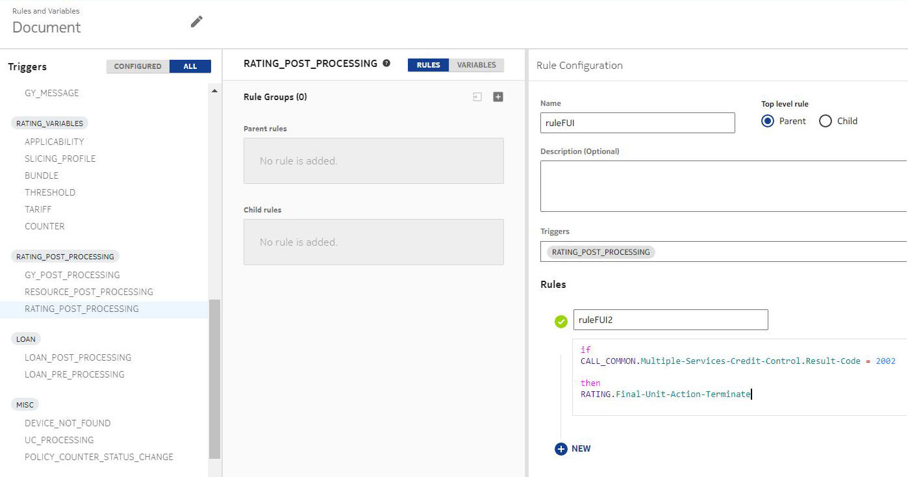
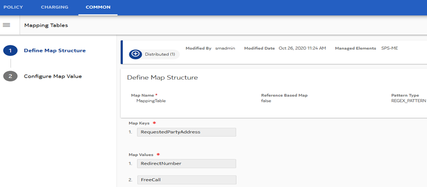
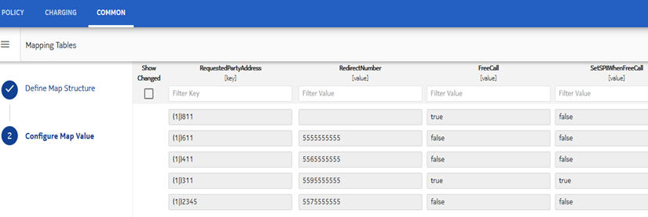
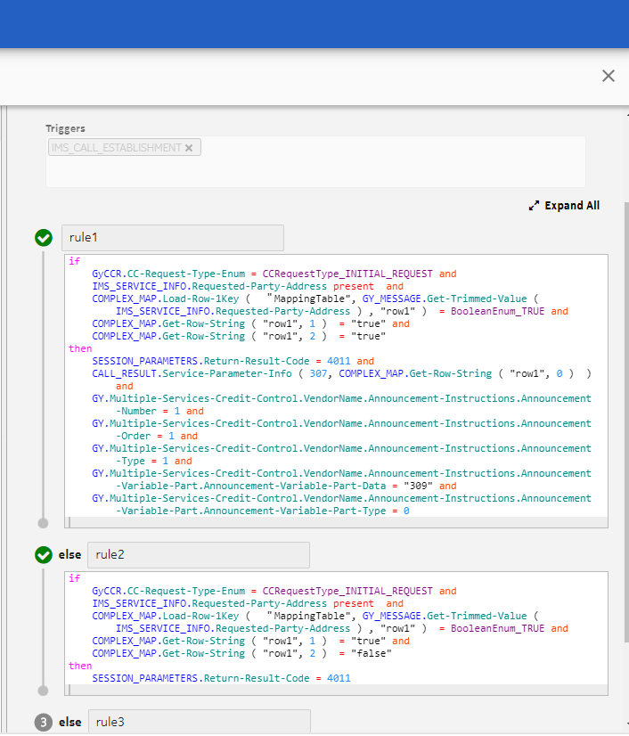
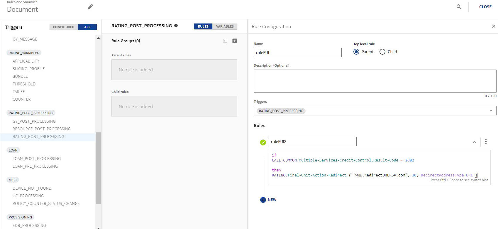

NCC supports redirection to an URL, or graceful termination of the service. For example, during a session, when the credit runs low or is exhausted, NCC can redirect the call for recharging, and send a RAR for the session after recharge to ensure the continuity of the session. External Equipment (EE) tries to book quota slices. But, as there is insufficient credit in the user account to accept the reservation, the charging service responds with a result code to warn the EE of non-availability of credit in the sub-session. After the account is recharged, the OCS sends RAR for re-authorization of credit and call continuity. A redirection timer can be used to add to the slice validity time (for the session) when redirection has to happen. This allows redirection to happen without closing the session. The corresponding TEMEntities get updated as per the validity time in the rule.
The graceful termination of the ongoing session happens when the subscriber has consumed all the final granted units.
The Final-Unit-Action AVP defines the behavior of service element when the user account cannot cover the cost of the service and must always be present when the Final-Unit-Indication AVP is included in a command.
The Restriction-Filter-Rule AVP or the Filter-Id AVP is present in the Credit-Control-Answer message to check whether the user is also allowed to access other services not accessible through the address given in the Redirect-Server AVP.
Following are the Final-Unit-Action AVP values:
-
TERMINATE: The Final-Unit-Indication AVP with Final-Unit-Action TERMINATE can also include GSU with cc-total-octets, and Tariff-Time-Change.
-
REDIRECT: If the Final-Unit-Action AVP is set to REDIRECT, then at least the Redirect-Server AVP must be present.
-
RESTRICT_ACCESS (currently not supported): If the Final-Unit-Action AVP is set to RESTRICT_ACCESS, then either the Restriction-Filter-Rule AVP or the Filter-Id AVP must be present.
See FUI AVP for FUI AVP format.
 Note:
Note:See section 5.6 Graceful Service Termination in RFC 4006 for more details.
Assumptions
Following assumptions apply to redirection feature:
-
Redirection is not applicable to the threshold linked to group or resources linked to group.
-
Redirection support for Ro voice calls is not supported.
-
In case of multiple MSCC, if redirection is done for a Rating Group (RG), then same is not applicable for other RG, if applicable.
-
In cases of redirection where some grant (GSU) is also given in CCA, it is assumed that PGW does the redirection after consumption of the GSU units.
Redirection and termination behavior
NCC behaves differently based on the configurations made. Few cases are listed as follows:
Graceful session termination: Consider that an IMS session is ongoing. Subscriber credit finishes including all buckets/balances used for charging the ongoing session. In this case, Final Unit Indication in CCA.FUA = TERMINATE. That is, FUI AVP is sent with terminate action. The session gets terminated gracefully. See the rule in the following figure.
- Redirection to a new destination number: For the case where OCS instructs
MTAS/NGIN AS to connect to a new destination number based on the reported
digits, the Service-Parameter-Info AVP can be used to pass the new destination
number. OCS can perform the logic according to specific configuration, that is,
in this case, results in connection to a new destination number. OCS instructs
the MTAS/NGIN to proceed with the current call without OCS control
(Result-Code=DIAMETER_CREDIT_CONTROL_NOT APPLICABLE) and pass the new
destination number inside the Service-Parameter-Info AVPs (SP Type = 307, SP
Value = new destination number in E164 format), together with announcement
information, if applicable.
Example: IMS ABD call is made, Service-Parameter-Info AVP is used to carry the redirect information along with announcement information in response.
Pre-condition: Ensure that the following configurations are made:
- Following Diameter VSA dictionaries are defined:
- /opt/tpa/conf/sac/diameter/vsa/CustomVendorDefinition.xml
- /opt/tpa/conf/sac/diameter/vsa/AttributeDefinition.xml
- /opt/tpa/conf/sac/diameter/rule/ChargingVsaToContextMapping.xml
- Complex map and Charging RSV is configured to set Service-Parameter-Info in response.
- Charging RSV is configured to set Announcement information in response.
- Diameter result code 4011 is configured in response to redirect scenario.
Complex Map table configuration:
Charging RSV rule configuration for trigger IMS_CALL_ESTABLISHMENT:

Expected result: The correct Result-Code, Service-Parameter-Info, and announcement information is set to CCA.
- Following Diameter VSA dictionaries are defined:
Redirection to a URL: Consider that a Gy session is ongoing. Subscriber credit finishes including all buckets or balances used for charging the ongoing session. In this case, consider that a redirection URL is configured. Subscriber is redirected to the configured URL. Subscriber recharges. RAR is sent to gateway in case of Gy session. To continue the session, the new MSCC in update and terminate feature is used.

Note the following additional points:
-
Operators can configure the redirect URL per Rating Result Code from rating. This ensures that the redirection is made to the right server based on the condition of the call. There can be different servers to redirect to based on the status of call (result_code). For example, if the account is in barred state, redirect to customer care. If a subscription is exhausted, redirect to self-care. Operators can create any condition that is supported in the RATING_POST_PROCESSING trigger. In most of the cases, MSCC and rating result code is used.
-
NCC behaves differently based on the value indicated in the Final-Unit-Action AVP. Based on the value, NCC may perform the actions TERMINATE or REDIRECT.
-
Operators can also configure NCC not to send Final-Unit-Action set to REDIRECT, but TERMINATE, which can be done using rules.
-
If the Final-Unit-Indication action is set to TERMINATE and if the subsequent call is of type Update, then RSU is ignored and the session is terminated.
-
If the MSCC result code is 4012 and FUI rules with redirect action is configured in the RATING_POST_PROCESSING trigger, then the validity time of Gy session is set to 24 hours. The session audit clears the session after this time. The Validity Time configured in the rule does not impact the default behavior.
FUI AVP
The FUI AVP format is as follows.
Final-Unit-Indication ::= < AVP Header: 430 >
{ Final-Unit-Action }
*[ Restriction-Filter-Rule ]
*[ Filter-Id ]
[ Redirect-Server ]Terminate action
The Final-Unit-Indication AVP with Final-Unit-Action TERMINATE can also include GSU with cc-total-octets, and Tariff-Time-Change. When the subscriber has consumed the final granted units, the service element terminates the service. This is the default handling applicable whenever an unsupported Final-Unit-Action value is received. A final Credit-Control-Request message to NCC is sent when the Final-Unit-Indication AVP indicating action TERMINATE was present. The CC-Request-Type AVP in the request is set to the value TERMINATION_REQUEST.
Redirect action
The Final-Unit-Indication AVP with Final-Unit-Action REDIRECT indicates that upon consumption of the final granted units, the subscriber must be redirected to the address specified in the Redirect-Server AVP.
Additional information
When NCC is configured to trigger FUI with any FUA value, it grants final zero quota.
When NCC had previously triggered FUI with any FUA value, it can accept the final zero used quota.
NCC accepts any incoming RSU and USU after the Final-Unit-Indication, and grants the quota accordingly or triggers a new Final-Unit-Indication with GSU.
NCC allows the gateway to request new quota even after the target service (MSCC/MUU) has been finalized with CCR that had Reporting-Reason AVP as Final.
Result codes
See Appendix: Result and error codes for charging result codes.
Examples
All the scenarios listed in this section work for IMS as well. Configure FUI rules in GY_CREDIT_REQUEST only in case device is in barred state and request type is INITIAL.
Example 1: Not enough credit (partial reservation case)
NCC receives a GY CCR(U) but does not have sufficient balance to reserve all the RSU. Only partial reservation is possible. It sends CCA with 2001 result code and FUI AVP with 2002 at MSCC level.
Configure a rule with RATING_POST_PROCESSING trigger as follows:
For CCA with FUI AVP within MSCC AVP for update message is received.
AVP Validity-Time: 448 , M: true , V: 0 , value: 390 (unsigned32)
Group Final-Unit-Indication: 430 , M: true , V: 0
AVP Final-Unit-Action: 449 , M: true , V: 0 , value: 1 (enumerated)
Group Redirect-Server: 434 , M: true , V: 0
AVP Redirect-Address-Type: 433 , M: true , V: 0 , value: 2 (enumerated)
AVP Redirect-Server-Address: 435 , M: true , V: 0 , value: www.redirectURLRSV.com (UTF8String)
In this example, the validity time is 390. Out of which, 360 is from quota management profile (slicing profile) and 30 is configured in the rule.
When the call is redirected to the specified URL and the device renews the subscription, NCC sends a RAR message followed by RAA from the PGW. Thereafter, PGW comes back with CCR(U) for the same session and the call continues.
Example 2: No balance available (4012 case)
NCC receives a GY CCR(U) but does not have balance even for partial reservation. It sends CCA with 2001 result code and FUI AVP with 4012 at MSCC level.
Configure a rule with RATING_POST_PROCESSING trigger as follows:
CCA with FUI AVP for update message is received.
Group Final-Unit-Indication: 430 , M: true ,
V: 0
AVP Final-Unit-Action: 449 , M: true , V: 0 ,
value: 1 (enumerated)
Group Redirect-Server: 434 , M: true , V: 0
AVP Redirect-Address-Type: 433 , M: true , V:
0 , value: 2 (enumerated)
AVP Redirect-Server-Address: 435 , M: true , V:
0 , value: www.notEnoughBalanceRedirect.com (UTF8String)
In this case, GSU is not granted. As specified in the assumptions, the validity time of Gy session is set to 24 hours.
Example 3: Account is in barred state
Charging is done from the account (main balance) and it is in barred state.
Condition is on rating result code 20007 NOT_ENOUGH_CREDIT_ACCOUNT_BARRED
Configure the following charging rule for RATING_POST_PROCESSING trigger.
if CALL_COMMON.Rating.Result-Code = 20007 then RATING.Final-Unit-Action-Redirect ( "http://www.nokia.com" , 60, RedirectAddressType_URL )CCA with FUI AVP successful initial message received.
Group Final-Unit-Indication: 430 , M: true , V: 0
AVP Final-Unit-Action: 449 , M: true , V: 0 , value: 1 (enumerated)
Group Redirect-Server: 434 , M: true , V: 0
AVP Redirect-Address-Type: 433 , M: true , V: 0 , value: 2 (enumerated)
AVP Redirect-Server-Address: 435 , M: true , V: 0 , value: http://www.nokia.com (UTF8String)
NCC receives GY CCRI and sends CCA.
The account state is changed to barred.
NCC receives GY CCRU (an update request) and sends CCA with 4010 mscc result code, FUI AVP at MSCC level.
Charging is done from the main account balance.
Configure a charging rule with RATING_POST_PROCESSING trigger.
Condition is on rating result code that is 41019 NEW_RES_NOT_ALLOWED_ACCOUNT_BARRED.
if CALL_COMMON.Rating.Result-Code = 41019 then RATING.Final-Unit-Action-Redirect ( "http://www.nokia.com" , 60, RedirectAddressType_URL)CCA with FUI AVP for update message is received.
Group Final-Unit-Indication: 430 , M: true , V: 0
AVP Final-Unit-Action: 449 , M: true , V: 0 , value: 1 (enumerated)
Group Redirect-Server: 434 , M: true , V: 0
AVP Redirect-Address-Type: 433 , M: true , V: 0 , value: 2 (enumerated)
AVP Redirect-Server-Address: 435 , M: true , V: 0 , value: http://www.nokia.com (UTF8String)